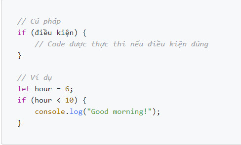

Cấu trúc điều khiển là tập hợp các qui tắc xác định thứ tự thực hiện chương trình.
Xét về cấu trúc, có 3 loại điều khiển:
Xét về thiết kế ngôn ngữ, có 2 loại điều khiển:
Thực hiện câu lệnh trong if nếu điều kiện cho trước là đúng.

Nếu điều kiện đúng thực hiện câu lệnh trong if, ngược lại nếu điều kiện sai thì hiện câu lệnh trong else.
Chỉ định một điều kiện mới nếu điều kiện đầu tiên là sai
Lênh switch case có công dụng giống như lệnh if else đó là đều dùng để rẻ nhánh chương trình, ứng với mỗi nhánh sẽ có một điều kiện cụ thể và điều kiện đó phải sử dụng toán tử so sánh bằng, còn đối với lệnh if else thì bạn có thể truyền vào một mệnh đề bất kì và Sử dụng nhiều toán tử khác nhau.
Cú pháp :
Nếu như trong tất cả các case không có case nào phù hợp thì nó sẽ chạy lệnh ở default, ngược lại nếu có case nào phù hợp thì chương trình sẽ chạy trong case đó, đồng thời lệnh break sẽ giúp chương trình thoát khỏi lệnh switch, còn nếu bạn không thêm lệnh break thì chương trình sẽ tiếp tục kiểm tra và chạy tiếp ở case tiếp theo.
Quy trình chạy như sau:
vd
Vòng lặp được sử dụng để thực thi một đoạn code lặp đi lặp lại một số lần nhất định Một số loại vòng lặp trong Javascript:
Vòng lặp For
Bạn có thể bỏ trống giá trị ban đầu trong cú pháp của vòng lặp for nếu trước đó đã gán giá trị của biến chạy
Bạn cũng có thể bỏ trống giá trị thứ hai trong cú pháp của vòng lặp for. Lúc này, nếu giá trị thứ hai trả về giá trị true thì vòng lặp tiếp tục thực thi, nếu là false thì vòng lặp sẽ dừng lại.
Nếu bỏ trống giá trị thứ hai thì bắt buộc trong vòng lặp phải có lệnh break, nếu không thì vòng lặp sẽ chạy mãi không dừng lại.
Giá trị thứ ba trong cú pháp vòng lặp for cũng không thực sự cần thiết nếu như bạn thay đổi giá trị của biến chạy trong vòng lặp.
Sơ đồ hoạt động của vòng lặp for
Tương tự for, thực hiện lặp lại một hành động (khối mã) cho tới khi điều kiện trở thành false
Tuy nhiên khác với for, while không có bước khai báo và cập nhật giá trị với mỗi vòng lặp
Sơ đồ hoạt động của while
Vòng lặp do-while
Tương tự vòng lặp while, chỉ khác nếu lệnh trong do được thực hiện ít nhất 1 lần sau đó mới kiểm tra điều kiện trong while
Try catch là một khối lệnh dùng để bắt lỗi chương trình trong javascript. Ta sử dụng try catch khi muốn chương trình không bị dừng khi một lệnh nào đó bị lỗi. Thường thì đó là những lỗi do người dùng nhập sai dữ liệu, hoặc người dùng thao tác bị sai.
Cú pháp "try...catch"
Cách hoạt động của try-catch như sau:
ví dụ